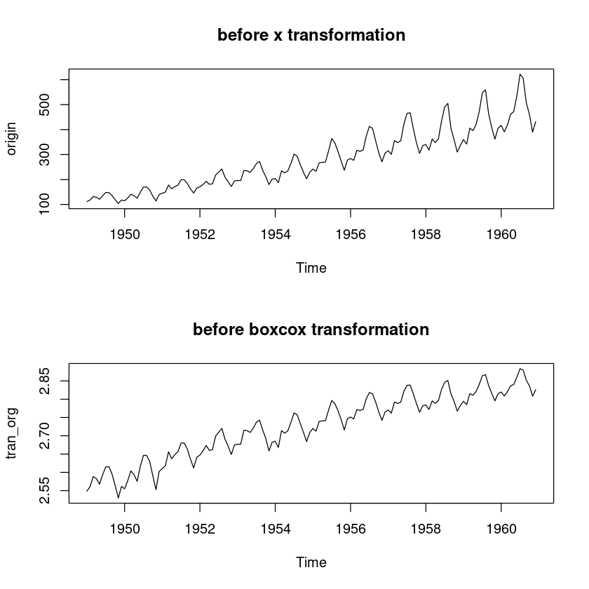
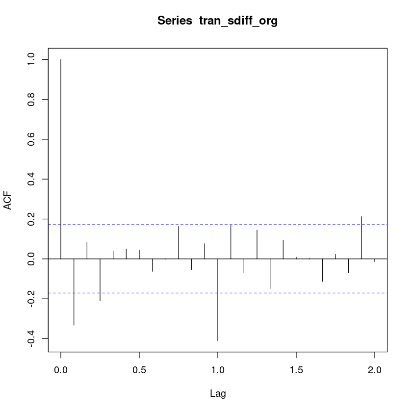
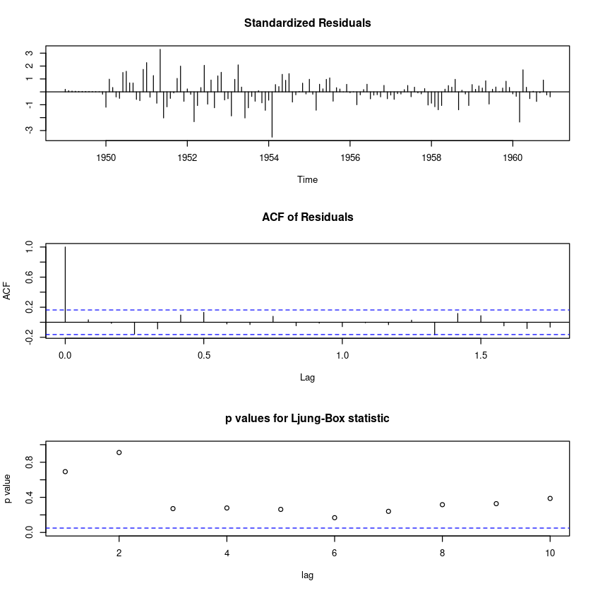
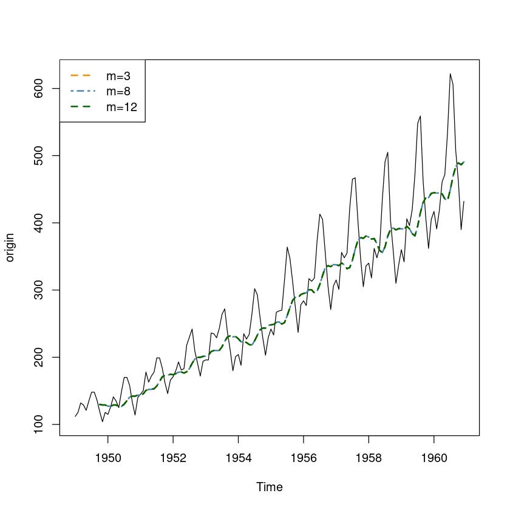
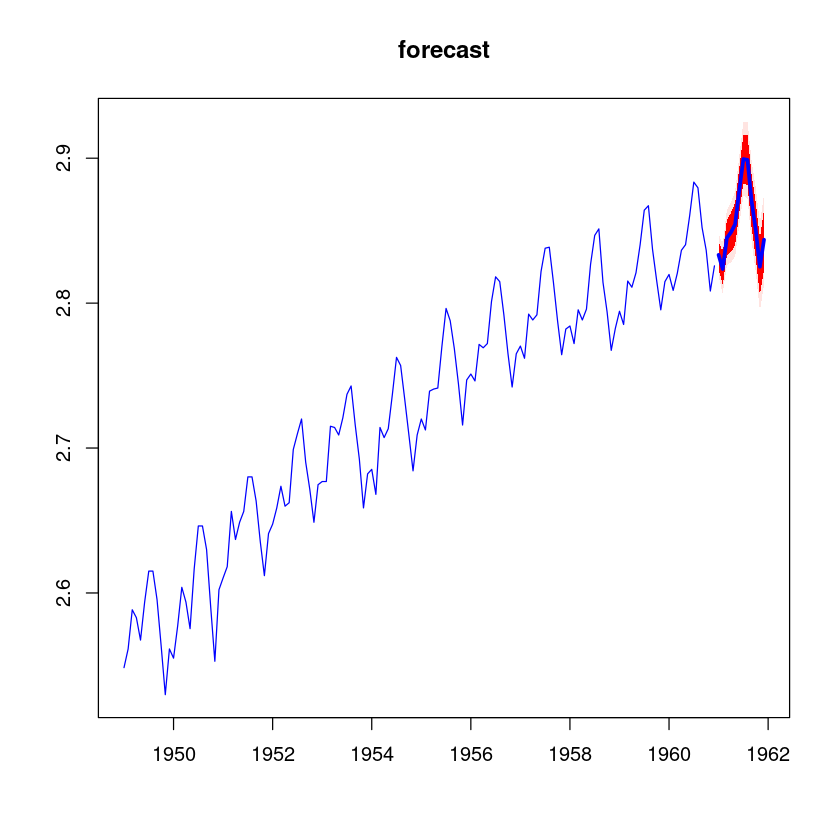

Registered S3 method overwritten by 'quantmod':
method from
as.zoo.data.frame zoo
Attaching package: ‘zoo’
The following objects are masked from ‘package:base’:
as.Date, as.Date.numeric
시간의 흐름에 따라서 관측된 데이터를 시계열 자료라고 한다. 시게열 분석을 위해서는 정상성을 만족해야한다. 정상성은 시점에 상관없이 시계열의 특성이 일정하다는 것을 의미하며, 이를 만족한 다는 것은 다음과 같은 것을 말한다.
정상성 - 평균이 일정하다. - 분산이 시점에 의존하지 않는다. - 공분산은 단지 시차에만 의존하고 시점 자체에는 의존하지 않는다.
Data Load
#============================================================
# Data Load
# - 1949년 ~ 1960년 까지의 월별 비행기 탑승 고객 수
#============================================================
origin <- AirPassengers
origin| Jan | Feb | Mar | Apr | May | Jun | Jul | Aug | Sep | Oct | Nov | Dec | |
|---|---|---|---|---|---|---|---|---|---|---|---|---|
| 1949 | 112 | 118 | 132 | 129 | 121 | 135 | 148 | 148 | 136 | 119 | 104 | 118 |
| 1950 | 115 | 126 | 141 | 135 | 125 | 149 | 170 | 170 | 158 | 133 | 114 | 140 |
| 1951 | 145 | 150 | 178 | 163 | 172 | 178 | 199 | 199 | 184 | 162 | 146 | 166 |
| 1952 | 171 | 180 | 193 | 181 | 183 | 218 | 230 | 242 | 209 | 191 | 172 | 194 |
| 1953 | 196 | 196 | 236 | 235 | 229 | 243 | 264 | 272 | 237 | 211 | 180 | 201 |
| 1954 | 204 | 188 | 235 | 227 | 234 | 264 | 302 | 293 | 259 | 229 | 203 | 229 |
| 1955 | 242 | 233 | 267 | 269 | 270 | 315 | 364 | 347 | 312 | 274 | 237 | 278 |
| 1956 | 284 | 277 | 317 | 313 | 318 | 374 | 413 | 405 | 355 | 306 | 271 | 306 |
| 1957 | 315 | 301 | 356 | 348 | 355 | 422 | 465 | 467 | 404 | 347 | 305 | 336 |
| 1958 | 340 | 318 | 362 | 348 | 363 | 435 | 491 | 505 | 404 | 359 | 310 | 337 |
| 1959 | 360 | 342 | 406 | 396 | 420 | 472 | 548 | 559 | 463 | 407 | 362 | 405 |
| 1960 | 417 | 391 | 419 | 461 | 472 | 535 | 622 | 606 | 508 | 461 | 390 | 432 |
| Jan | Feb | Mar | Apr | May | Jun | Jul | Aug | Sep | Oct | Nov | Dec | |
|---|---|---|---|---|---|---|---|---|---|---|---|---|
| 1949 | 1 | 2 | 3 | 4 | 5 | 6 | 7 | 8 | 9 | 10 | 11 | 12 |
| 1950 | 1 | 2 | 3 | 4 | 5 | 6 | 7 | 8 | 9 | 10 | 11 | 12 |
| 1951 | 1 | 2 | 3 | 4 | 5 | 6 | 7 | 8 | 9 | 10 | 11 | 12 |
| 1952 | 1 | 2 | 3 | 4 | 5 | 6 | 7 | 8 | 9 | 10 | 11 | 12 |
| 1953 | 1 | 2 | 3 | 4 | 5 | 6 | 7 | 8 | 9 | 10 | 11 | 12 |
| 1954 | 1 | 2 | 3 | 4 | 5 | 6 | 7 | 8 | 9 | 10 | 11 | 12 |
| 1955 | 1 | 2 | 3 | 4 | 5 | 6 | 7 | 8 | 9 | 10 | 11 | 12 |
| 1956 | 1 | 2 | 3 | 4 | 5 | 6 | 7 | 8 | 9 | 10 | 11 | 12 |
| 1957 | 1 | 2 | 3 | 4 | 5 | 6 | 7 | 8 | 9 | 10 | 11 | 12 |
| 1958 | 1 | 2 | 3 | 4 | 5 | 6 | 7 | 8 | 9 | 10 | 11 | 12 |
| 1959 | 1 | 2 | 3 | 4 | 5 | 6 | 7 | 8 | 9 | 10 | 11 | 12 |
| 1960 | 1 | 2 | 3 | 4 | 5 | 6 | 7 | 8 | 9 | 10 | 11 | 12 |
EDA

시계열 분해 및 회귀분석 이용 예측
- 가법모형: 계절 요인의 분산이 일정할 때
- 모형식: \(Z_t = T_t + C_t + S_t + l_t\)
- 승법모형: 계절 요인의 분산이 달라짐
- \(Z_t = T_t\cdot C_t \cdot S_t \cdot l_t\)
가법은 더하는 거고 승법은 곱하는 거다.
\(y_t = Season_t + Trend_t + noise\)

- 추세(trend) : 시간의 흐름에 따라 일정하게 증가하거나 감소한다.
- 계절성: 1분기마다 뭐가 높거나 나다 혹은 4분기마다..
- 불규칙성분: 설명되지 않는 오차항
- 1
- 2
- 3
- 4
- 5
- 6
- 7
- 8
- 9
- 10
- 11
- 12
- 1
- 2
- 3
- 4
- 5
- 6
- 7
- 8
- 9
- 10
- 11
- 12
- 1
- 2
- 3
- 4
- 5
- 6
- 7
- 8
- 9
- 10
- 11
- 12
- 1
- 2
- 3
- 4
- 5
- 6
- 7
- 8
- 9
- 10
- 11
- 12
- 1
- 2
- 3
- 4
- 5
- 6
- 7
- 8
- 9
- 10
- 11
- 12
- 1
- 2
- 3
- 4
- 5
- 6
- 7
- 8
- 9
- 10
- 11
- 12
- 1
- 2
- 3
- 4
- 5
- 6
- 7
- 8
- 9
- 10
- 11
- 12
- 1
- 2
- 3
- 4
- 5
- 6
- 7
- 8
- 9
- 10
- 11
- 12
- 1
- 2
- 3
- 4
- 5
- 6
- 7
- 8
- 9
- 10
- 11
- 12
- 1
- 2
- 3
- 4
- 5
- 6
- 7
- 8
- 9
- 10
- 11
- 12
- 1
- 2
- 3
- 4
- 5
- 6
- 7
- 8
- 9
- 10
- 11
- 12
- 1
- 2
- 3
- 4
- 5
- 6
- 7
- 8
- 9
- 10
- 11
- 12
Levels:
- '1'
- '2'
- '3'
- '4'
- '5'
- '6'
- '7'
- '8'
- '9'
- '10'
- '11'
- '12'
| seasonal | trend | remainder | |
|---|---|---|---|
| <dbl> | <dbl> | <dbl> | |
| 1 | -0.0195009846 | 2.572470 | -0.004485195 |
| 2 | -0.0170966571 | 2.573324 | 0.005147320 |
| 3 | 0.0111248690 | 2.574178 | 0.003105273 |
| 4 | 0.0009896123 | 2.575032 | 0.006915958 |
| 5 | -0.0035318860 | 2.575972 | -0.004933871 |
| 6 | 0.0200103731 | 2.576911 | -0.003201882 |
- \(\text{tran_org} = \text{trend}\times \beta_1 + M1\times d1 + \dots M 11\times d11 + \epsilon\)
# 회귀 모형 생성
# 모형식 : tran_org=trend∗β1+M1∗d1+...+M11∗d11+ϵ
# 가변수를 회귀모형에 넣을 때는 절편을 포함하는 것과 포함하지 않는 것에 대한 회귀계수 의미가 달라짐을 유의
model_stl <- lm(formula = tran_org~0+ stl_tran_org_df$trend+M, na.action = NULL)
summary(model_stl)
Call:
lm(formula = tran_org ~ 0 + stl_tran_org_df$trend + M, na.action = NULL)
Residuals:
Min 1Q Median 3Q Max
-0.0208982 -0.0030056 0.0003675 0.0032375 0.0186285
Coefficients:
Estimate Std. Error t value Pr(>|t|)
stl_tran_org_df$trend 1.003132 0.006557 152.982 < 2e-16 ***
M1 -0.025890 0.017899 -1.446 0.15043
M2 -0.029141 0.017911 -1.627 0.10614
M3 -0.002850 0.017923 -0.159 0.87389
M4 -0.009503 0.017936 -0.530 0.59713
M5 -0.010617 0.017948 -0.592 0.55519
M6 0.012901 0.017961 0.718 0.47386
M7 0.032071 0.017974 1.784 0.07669 .
M8 0.030402 0.017986 1.690 0.09335 .
M9 0.004045 0.017998 0.225 0.82255
M10 -0.023032 0.018011 -1.279 0.20322
M11 -0.052048 0.018023 -2.888 0.00454 **
M12 -0.028326 0.018036 -1.571 0.11870
---
Signif. codes: 0 ‘***’ 0.001 ‘**’ 0.01 ‘*’ 0.05 ‘.’ 0.1 ‘ ’ 1
Residual standard error: 0.006548 on 131 degrees of freedom
Multiple R-squared: 1, Adjusted R-squared: 1
F-statistic: 1.92e+06 on 13 and 131 DF, p-value: < 2.2e-16par(mfrow=c(1,2))
# Hist Plot
hist(resid(model_stl),prob=TRUE,12, main = "Histogram of residuals")
lines(density(resid(model_stl)), col='red', lwd=2)
# Q-Q PLOT
qqnorm(resid(model_stl))
qqline(resid(model_stl))
par(mfrow=c(1,1))
# Q-Q Plot과 Histogram을 확인하면 양쪽 끝이 두텁
# 잔차들간의 상관관계가 존재하는가에 대한 가설 검정 : DW test
library(lmtest)
dwtest(model_stl) #가설검정 결과 잔차들간의 1차 상관관계가 존재 : White noise 라고 할 수 없음.
Durbin-Watson test
data: model_stl
DW = 1.4677, p-value = 0.001001
alternative hypothesis: true autocorrelation is greater than 0# 회귀모형 예측 결과 확인
plot(spline(time(origin), origin),type='l',xlab='Time',ylab='Pop')
# 원 데이터 및 fitted 데이터의 비교
# BoxCox 역변환 필요 함
lines(InvBoxCox(model_stl$fitted.values, lambda = BoxCox.lambda(origin)), col='red')
mean((origin - InvBoxCox(model_stl$fitted.values, lambda = BoxCox.lambda(origin)))^2, na.rm = TRUE) #MSE
81.1421060592885
# 다른방법의 회귀모형
t <- 1:length(origin)
model_t <- lm(formula = tran_org~ t +M, na.action = NULL)
summary(model_t)
# model_stl 에서는 trend에 해당하는 회귀계수가 1에 가까웠는데,
# model_t에서는 t 에 해당하는 회귀계수가 2.563 으로 trend값과 거의 유사하다.
# 이렇게 시계열 모형을 적합할 때 회귀모형을 적합해도 되지만,
# 이 경우 회귀모형에서의 모형 가정이 깨지게 되며 (오차의 독립성)
# 최소제곱합에 의해 구해진 회귀계수의 추정량이 더이상 베스트가 아니게 된다. (분산이 커질 수 있음)
# 따라서 시계열 데이터에 대해 회귀모형으로 적합하는 것은 적절하지 않음.
Call:
lm(formula = tran_org ~ t + M, na.action = NULL)
Residuals:
Min 1Q Median 3Q Max
-0.036966 -0.012087 0.002366 0.012002 0.030970
Coefficients:
Estimate Std. Error t value Pr(>|t|)
(Intercept) 2.563e+00 4.718e-03 543.342 < 2e-16 ***
t 1.992e-03 2.979e-05 66.862 < 2e-16 ***
M2 -3.329e-03 6.046e-03 -0.551 0.582797
M3 2.288e-02 6.046e-03 3.785 0.000233 ***
M4 1.615e-02 6.046e-03 2.672 0.008510 **
M5 1.499e-02 6.047e-03 2.478 0.014474 *
M6 3.845e-02 6.048e-03 6.358 3.13e-09 ***
M7 5.757e-02 6.048e-03 9.518 < 2e-16 ***
M8 5.581e-02 6.049e-03 9.226 6.29e-16 ***
M9 2.937e-02 6.050e-03 4.854 3.38e-06 ***
M10 2.206e-03 6.052e-03 0.365 0.716031
M11 -2.687e-02 6.053e-03 -4.440 1.89e-05 ***
M12 -3.217e-03 6.055e-03 -0.531 0.596147
---
Signif. codes: 0 ‘***’ 0.001 ‘**’ 0.01 ‘*’ 0.05 ‘.’ 0.1 ‘ ’ 1
Residual standard error: 0.01481 on 131 degrees of freedom
Multiple R-squared: 0.9738, Adjusted R-squared: 0.9714
F-statistic: 405.6 on 12 and 131 DF, p-value: < 2.2e-16
Call:
lm(formula = tran_org ~ 0 + stl_tran_org_df$trend + M, na.action = NULL)
Residuals:
Min 1Q Median 3Q Max
-0.0208982 -0.0030056 0.0003675 0.0032375 0.0186285
Coefficients:
Estimate Std. Error t value Pr(>|t|)
stl_tran_org_df$trend 1.003132 0.006557 152.982 < 2e-16 ***
M1 -0.025890 0.017899 -1.446 0.15043
M2 -0.029141 0.017911 -1.627 0.10614
M3 -0.002850 0.017923 -0.159 0.87389
M4 -0.009503 0.017936 -0.530 0.59713
M5 -0.010617 0.017948 -0.592 0.55519
M6 0.012901 0.017961 0.718 0.47386
M7 0.032071 0.017974 1.784 0.07669 .
M8 0.030402 0.017986 1.690 0.09335 .
M9 0.004045 0.017998 0.225 0.82255
M10 -0.023032 0.018011 -1.279 0.20322
M11 -0.052048 0.018023 -2.888 0.00454 **
M12 -0.028326 0.018036 -1.571 0.11870
---
Signif. codes: 0 ‘***’ 0.001 ‘**’ 0.01 ‘*’ 0.05 ‘.’ 0.1 ‘ ’ 1
Residual standard error: 0.006548 on 131 degrees of freedom
Multiple R-squared: 1, Adjusted R-squared: 1
F-statistic: 1.92e+06 on 13 and 131 DF, p-value: < 2.2e-16지수평활을 이용한 예측
단순 지수 평활: 추세나 계절적 변동이 없는 시계열 예측에 사용 (추세X,계절성X)
이중 지수 평활: 추세만 존재하는 시계열 예측에 사용 (추세)
HoltWinters: 추세와 계절 요인이 있는 시계열 예측에 사용 이중 지수 평활을 확장한 개념으로 특정 기간 내의 계절성을 함께 고려 가능 (추세,순환, 계절성을 고려하여 시계열 예측을 하니 당연히 평활모수가 3개가 되는것 \(\alpha, \gamma, \beta\)) 그럼 이러한 알파,베타,감마라는 가중치가 적용됨.
시간의 흐름에 따라 관측값의 크기가 증가하고, 변동폭도 같이 증가한다. (가법)
현재수준에 비례해서 변동폭 크기가 변화한다. (승법)

- 원자료 데이터
- 계절성: 어떠한 주기마다 반복되는 패턴
- trend: 시간에 따라 일정하게 증가/감소하는 추세
- 어떠한 불규칙 성분, 오차항을 뜻한다
Holt-Winters exponential smoothing with trend and multiplicative seasonal component.
Call:
HoltWinters(x = origin, seasonal = "multiplicative")
Smoothing parameters:
alpha: 0.2755925
beta : 0.03269295
gamma: 0.8707292
Coefficients:
[,1]
a 469.3232206
b 3.0215391
s1 0.9464611
s2 0.8829239
s3 0.9717369
s4 1.0304825
s5 1.0476884
s6 1.1805272
s7 1.3590778
s8 1.3331706
s9 1.1083381
s10 0.9868813
s11 0.8361333
s12 0.9209877\(1\)로 갈수록 어떤 평활모수가 커질수록 최근 관측값에 더 많은 가중치를 두는 것
\(0\)으로 갈수록 과거 관측값에 더 많은 가중치를 두는 것.
\(\alpha\) : 시계열 크기
\(\beta\) : 기울기 (추세가중치) –> 0에 가까우니까 과거 관측치에 더 많은 가중치
\(\gamma\):
# 원 데이터 및 fitted 데이터의 비교
# plot
plot(spline(time(origin), origin),type='l',xlab='Time',ylab='Pop')
lines(model_es$fitted[,1], col='red')
- 추세뿐만 아니라 계절성까지 고려해서 이런식으로 잘 예측되었다..
# 이동평균법 사용 방법
plot(origin)
library(TTR) #이동평균 SMA 함수 사용하기 위한 패키지 불러오기
originSMA3 <- SMA(origin,n=3) #window=3
originSMA3
lines(originSMA3, col='darkorange', lty=2, lwd=2)
originSMA8 <- SMA(origin,n=8)
lines(originSMA8, col='steelblue', lty=4, lwd=2)
originSMA12 <- SMA(origin,n=12)
lines(originSMA12, col='darkgreen', lty=2, lwd=2)
legend("topleft", c("m=3", "m=8", "m=12"), col=c("darkorange", "steelblue","darkgreen"), lty=c(2,4,2), lwd=2)| Jan | Feb | Mar | Apr | May | Jun | Jul | Aug | Sep | Oct | Nov | Dec | |
|---|---|---|---|---|---|---|---|---|---|---|---|---|
| 1949 | NA | NA | 120.6667 | 126.3333 | 127.3333 | 128.3333 | 134.6667 | 143.6667 | 144.0000 | 134.3333 | 119.6667 | 113.6667 |
| 1950 | 112.3333 | 119.6667 | 127.3333 | 134.0000 | 133.6667 | 136.3333 | 148.0000 | 163.0000 | 166.0000 | 153.6667 | 135.0000 | 129.0000 |
| 1951 | 133.0000 | 145.0000 | 157.6667 | 163.6667 | 171.0000 | 171.0000 | 183.0000 | 192.0000 | 194.0000 | 181.6667 | 164.0000 | 158.0000 |
| 1952 | 161.0000 | 172.3333 | 181.3333 | 184.6667 | 185.6667 | 194.0000 | 210.3333 | 230.0000 | 227.0000 | 214.0000 | 190.6667 | 185.6667 |
| 1953 | 187.3333 | 195.3333 | 209.3333 | 222.3333 | 233.3333 | 235.6667 | 245.3333 | 259.6667 | 257.6667 | 240.0000 | 209.3333 | 197.3333 |
| 1954 | 195.0000 | 197.6667 | 209.0000 | 216.6667 | 232.0000 | 241.6667 | 266.6667 | 286.3333 | 284.6667 | 260.3333 | 230.3333 | 220.3333 |
| 1955 | 224.6667 | 234.6667 | 247.3333 | 256.3333 | 268.6667 | 284.6667 | 316.3333 | 342.0000 | 341.0000 | 311.0000 | 274.3333 | 263.0000 |
| 1956 | 266.3333 | 279.6667 | 292.6667 | 302.3333 | 316.0000 | 335.0000 | 368.3333 | 397.3333 | 391.0000 | 355.3333 | 310.6667 | 294.3333 |
| 1957 | 297.3333 | 307.3333 | 324.0000 | 335.0000 | 353.0000 | 375.0000 | 414.0000 | 451.3333 | 445.3333 | 406.0000 | 352.0000 | 329.3333 |
| 1958 | 327.0000 | 331.3333 | 340.0000 | 342.6667 | 357.6667 | 382.0000 | 429.6667 | 477.0000 | 466.6667 | 422.6667 | 357.6667 | 335.3333 |
| 1959 | 335.6667 | 346.3333 | 369.3333 | 381.3333 | 407.3333 | 429.3333 | 480.0000 | 526.3333 | 523.3333 | 476.3333 | 410.6667 | 391.3333 |
| 1960 | 394.6667 | 404.3333 | 409.0000 | 423.6667 | 450.6667 | 489.3333 | 543.0000 | 587.6667 | 578.6667 | 525.0000 | 453.0000 | 427.6667 |

ARIMA를 이용한 예측
- ARIMA: \(d\)차 차분을 통해 비정상 시계열을 정상시계열로 변환하여 \(\tt ARMA(p,q)\)과정 수행
- \(\tt{ARIMA}(p,d,q)\) 모형식 \[(1-\phi_1B-\cdots-\phi_pB^p)Z_t(1-B)^d = (1-\theta_1B-\cdots -\theta_qB^q)w_t\]
AR모델과 MA모델을 통합한 모델이다.
AR모델은 과거값이 독립변수로 투입된 것이다. (오늘방문 고객수? 어제 방문한 고객수)
MA모델은 과거의 오차항이 투입이 되었다. (현재시점의 오차항이 있고, 어제오차항이 있을 텐데 어제 오차항까지 고려하겠다.. 라는것)
자기회귀모형과 이동평균 모형을 합친 것을 ARMA모형이라고 하는데 ARMA모델은 과거값이 독립변수로 들어가고 오차항의 과거값이 또 들어간다 이렇게 통합된 모델이라고 보면 된다.
그럼 ARMA랑 ARIMA가 뭐가다른가? 여기서 시계열의 정상성이 문제가 되는것.
시계열이 정상이 될 수도 비정상이 될 수도 있잖아요. 만약 우리가 정상 시계열에 대한 regression을 수행한다고 했을 떄 그냥 ARMA모형을 사용하면 됩니다.
그런데 비정상 시계열을 정상시계열로 차분을 통해서 분석을 했다. 그러니까 차분을 통해서 정상시계열로 만들었다. 차분정상적 시계열이라고 하는데 이런 경우 ARIMA모델을 사용한다. ARMA모델보다 ARIMA 모델을 사용하는 경우가 더 많다.
ARIMA모델을 이해하기 위해서는 AR, MA를 잘 이해를 해야하는데 AR의 차수를 보통 \(p\), MA의 차수를 보통 \(q\)라고 표현한다.
차분정상적 시계열에 대해 알아봅시다.
#============================================================
# ARIMA를 이용한 예측
#============================================================
# 데이터 탐색 및 모형식별
# 시도표
plot(origin)
# 데이터의 이분산과 1차 추세가 존재함
# 분산 안정화를 위한 Box Cox 변환과 1차 차분 필요

자기상관함수와 편자기상관함수에 대해서 먼저 추정을 해보겠습니다.
Autocorrelations of series ‘tran_diff_org’, by lag
0.0000 0.0833 0.1667 0.2500 0.3333 0.4167 0.5000 0.5833 0.6667 0.7500 0.8333
1.000 0.166 -0.134 -0.130 -0.323 -0.074 0.073 -0.113 -0.342 -0.095 -0.113
0.9167 1.0000 1.0833 1.1667 1.2500 1.3333 1.4167 1.5000 1.5833 1.6667 1.7500
0.179 0.829 0.187 -0.155 -0.088 -0.284 -0.037 0.046 -0.118 -0.334 -0.088
Partial autocorrelations of series ‘tran_diff_org’, by lag
0.0833 0.1667 0.2500 0.3333 0.4167 0.5000 0.5833 0.6667 0.7500 0.8333 0.9167
0.166 -0.166 -0.080 -0.326 0.002 -0.032 -0.219 -0.493 -0.185 -0.490 -0.310
1.0000 1.0833 1.1667 1.2500 1.3333 1.4167 1.5000 1.5833 1.6667 1.7500
0.582 0.066 -0.145 0.135 -0.007 0.036 -0.143 0.096 -0.011 -0.056 acf(tran_sdiff_org, lag.max = 24)
# acf는 lag=1,3,12에서 0이 아닌값 가짐 비계절 시차 4부터 절단 -> MA(3), 계절 -> 시차 2부터 절단 SMA(1)
# auto.arima를 통해 aic가 최소가 되는 order 값 구함
auto.arima(tran_sdiff_org, max.p = 3, max.q=3, max.Q=1)
# auto.arima(tran_org, max.p = 3, max.q=3, max.Q=1)Series: tran_sdiff_org
ARIMA(0,0,1)(0,0,1)[12] with zero mean
Coefficients:
ma1 sma1
-0.4355 -0.5847
s.e. 0.0908 0.0725
sigma^2 = 5.789e-05: log likelihood = 451.59
AIC=-897.18 AICc=-896.99 BIC=-888.55- AIC, BIC 값이 낮을수록 예측정확도가 높다라고 생각하면 된다.
Series: tran_org
ARIMA(0,1,1)(0,1,1)[12]
Coefficients:
ma1 sma1
-0.4355 -0.5847
s.e. 0.0908 0.0725
sigma^2 = 5.855e-05: log likelihood = 451.6
AIC=-897.19 AICc=-897.01 BIC=-888.57# 모형 검진
# 잔차 검정
tsdiag(model_arima)
# 독립성 검정
Box.test(model_arima$residuals, type="Ljung-Box")
# 잔차의 독립성, 등분산성, 정규성 만족
Box-Ljung test
data: model_arima$residuals
X-squared = 0.15595, df = 1, p-value = 0.6929
\(H_0\): 잔차의 자기상관이 없다.
- Box.test는 잔차의 자기상관이 존재하는지 검정.
- 잔차의 과거값과 관련이 있다는 건데 안좋은거지..
# 원 데이터 및 fitted 데이터의 비교
plot(spline(time(origin), origin),type='l',xlab='Time',ylab='Pop')
lines(InvBoxCox(fitted(model_arima), BoxCox.lambda(origin)), col='red')
mean((origin - InvBoxCox(fitted(model_arima), BoxCox.lambda(origin)))^2)
107.241415231708

# 12개월 예측
arima_fit <- predict(model_arima, n.ahead=12) #BoxCox 변환 데이터 사용
lambda <- BoxCox.lambda(origin)
ts.plot(origin, xlim=c(1950,1965), ylim = c(0, 1000))
lines(InvBoxCox(arima_fit$pred, lambda),col="red")
lines(InvBoxCox(arima_fit$pred+1.96*arima_fit$se, lambda),col="blue",lty=1)
lines(InvBoxCox(arima_fit$pred-1.96*arima_fit$se, lambda),col="blue",lty=1)plot(arima_fit_, col='blue', flty=1, flwd=3, fcol='blue', shadecols=c('mistyrose','red'),main='forecast')
- 이쁘게 안나오네…